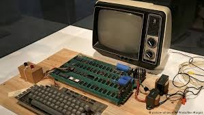

CSE 101 - # HW04
|
|
The History of ComputerThe First Personal Computer ENIAC might be first computer, but it was actually a huge calculator. After the transistor invented, computers could have a screen and bigger storage system. The first computer which has processor, had have Intel processor architecture. IBM produced the first personal computer “IBM-Pc”. At first, floppy disk used in this computer for storage, and then IBM added a hard disk to IBM-Pc. One of the most important features of IBM was the computer had the first operating system with DOS. IBM was looking for a new operating system that work most effective and developable, so IBM agreed with Microsoft. So, Windows was born this agreement.  So, the computer developed day by day, and it continues developing. All the things we use at daily times, are a computer mostly. Computers is everywhere; fridge, watches, airconditioners, smart phones… An interesting knowledge I found : “ 2013 smart phone is over 2200 times faster than NASA’s Apollo 11 guidance computer and over three million times the storage memory”. Computer technology is quite developed, computers are very very fast, clearly. With technological developments, a lot of computer technology and softwares appear. For example; The Internet, that provides to communicate computers each other or all around the world. The computers always changing and developing, nobody knows what is the future of computers, but many scientists think that the artificial intelligence will our future. We can describe this like “ There are robots everywhere.” Nobody knows, as I said. But the truth is, there a lot of computers that can most of things we do, may be more. |